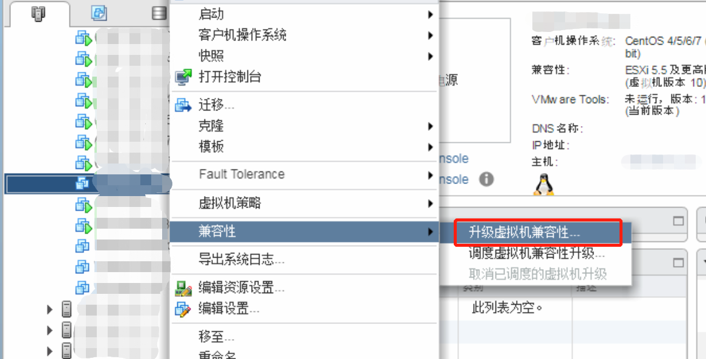
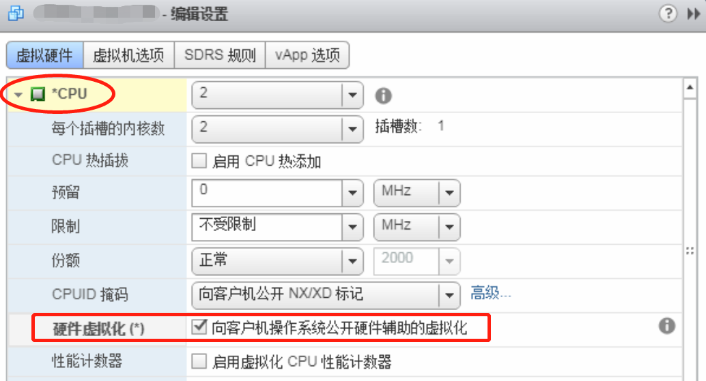
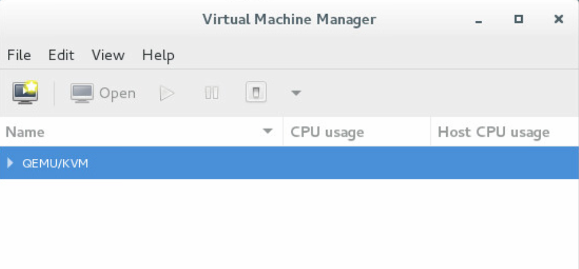

嵌套虚拟化（nested virtualization）是一种在虚拟机内部继续虚拟化的一种技术，Linux Kernel 文档 Nested VMX 对于嵌套虚拟特性有详细说明。个人曾经一度认为嵌套虚拟化只支持同类虚拟化技术（例如VMware虚拟机内嵌套部署VMware虚拟机，知乎也有人讨论过只要硬件给力理论上是能够无限嵌套的：虚拟机中运行虚拟机中运行虚拟机……如此循环能运行多少个？），最近在研究KVM虚拟机镜像制作的时候才发现 VMware 实际上也是支持虚拟化 KVM 的（当然，前提还是硬件支持），不过实际操作才发现有些过程并不像网上的文章那么简单（主要的坑在于 GDK 的 bug），这里汇总整理下完整的操作步骤。（本文操作过程引用参考过多篇文章，详情列于文末以示感谢。）
NOTE:
本文基于 vSphere 6.0 版本操作，其他版本可类比操作；
应用嵌套虚拟化之后性能必然有所下降，也会带来一定的不稳定性，比较适用于需要在 VMware 环境模拟 KVM 的场景，不建议使用在生产环境。
1. 开启VMware虚拟机的CPU虚拟化选项
首先，在VMware中创建一台虚拟机（建议版本 10 以上），并安装 Linux 操作系统（本文安装的是CentOS 7.2系统），在虚拟机关机的情况下做如下配置：
1）登录VMware桌面客户端 vsphere client，编辑虚拟机，设置“CPU/MMU虚拟化”选项，配置“使用Intel VT-x/AMD-v进行指令集虚拟化并使用Intel EPT/AMD RVI进行MMU虚拟化”；
2）登录 VMware 网页客户端 vsphere web client 对虚拟机做其他配置（VMware 还是太分裂，强行将设置放在 web 端，所以这里建议 vSphere 版本在 6.0 以上，web 的支持相对好那么一点点，虽然也还是一样难用）；
3）如果前面创建的虚拟机版本较低（版本9、10），这里还需要升级虚拟机的兼容性：在虚机上右键选择“兼容性”->“升级虚拟机兼容性”；

4）再次进入虚拟机的编辑设置界面，打开 CPU 选项卡，有一行“硬件虚拟化：向客户机操作系统公开硬件辅助的虚拟化”，将其打钩即可打开虚拟机的 CPU 虚拟化功能；

VMware 的配置操作到此结束，接下来是虚拟机内部操作。
2. 配置虚拟机 KVM 模块
1）打开虚拟机电源，登录虚拟机执行以下命令检查虚拟机是否支持虚拟化：
# grep vmx /proc/cpuinfo
如果该命令有信息输出，就说明 CPU 支持虚拟化，可以继续往下进行；否则 CPU 不支持的情况下无法进行嵌套虚拟化部署。
注意，本命令只针对 Intel CPU，对于 AMD CPU 将命令中的 vmx 改成 svm 即可。
2）执行以下命令查看是否加载KVM模块：
# lsmod | grep kvm
如果没有加载，依次执行以下命令：
# modprobe kvm
# modprobe kvm-intel（针对Intel CPU）或者 modprobe kvm-amd（针对AMD CPU）
# lsmod | grep kvm
3. 虚拟机环境安装
1）将虚拟机 Python 环境配置为 2.7 版本，并安装 KVM 与 virt-manager；
yum install qemu qemu-kvm
yum install virt-manager libvirt libvirt-Python python-virtinst libvirt-client virt-viewer -y
2）为防止出现 GDK 图形界面异常：
DEBUG (cli:257) Uncaught exception:
Traceback (most recent call last):
File "/usr/share/virt-manager/virtManager/createnet.py", line 830, in finish
self.set_finish_cursor()
File "/usr/share/virt-manager/virtManager/baseclass.py", line 272, in set_finish_cursor
cursor = Gdk.Cursor.new_from_name(gdk_window.get_display(), "progress")
TypeError: constructor returned NULL
需要编辑 /usr/share/virt-manager/virtManager/baseclass.py
将其中涉及Gdk.Cursor.new_from_name行注释掉（简单粗暴的操作有时候意外的有效）：
#cursor = Gdk.Cursor.new_from_name(gdk_window.get_display(), "progress")
#gdk_window.set_cursor(cursor)
#cursor = Gdk.Cursor.new_from_name(gdk_window.get_display(), "default")
#gdk_window.set_cursor(cursor)
同样编辑 /usr/share/virt-manager/virtManager/asyncjob.py
将其中涉及 Gdk.Cursor.new_from_name 行注释掉：
#gdk_window.set_cursor(
# Gdk.Cursor.new_from_name(gdk_window.get_display(), "progress"))
3）在 Terminal 中运行 virt-manager 命令打开 Virtual Machine Manager：

4）如果没有图中的 connection，可以新建一个connection（QEMU/KVM）；
5）对已有的 connection 创建NAT虚拟网络：

6）在控制台界面或者直接使用命令创建新的虚拟机。
创建虚拟机之后，为了防止打开控制台窗口出现无法连接到图形界面错误：
Error connecting to graphical console: could not get a reference to type class
需要设置显示模式为“vnc server”

随后，就可以按照正常的操作系统安装步骤配置安装虚拟机了。
Tips
virt-manager 的日志位于 /root/.cache/virt-manager/virt-manager.log，任何问题均可以查询日志。使用参数--no-fork打开virt-manager（virt-manager --no-fork）可以不输出日志。
Reference
[2] vSphere 5 文档中心: 在 vSphere Client 中更改 CPU/MMU 虚拟化设置
[3] Centos7.4安装kvm虚拟机（使用virt-manager管理）
Comments
comments powered by Disqus